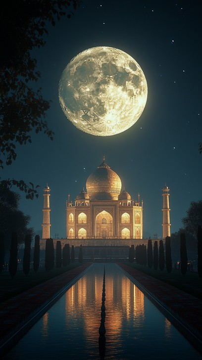
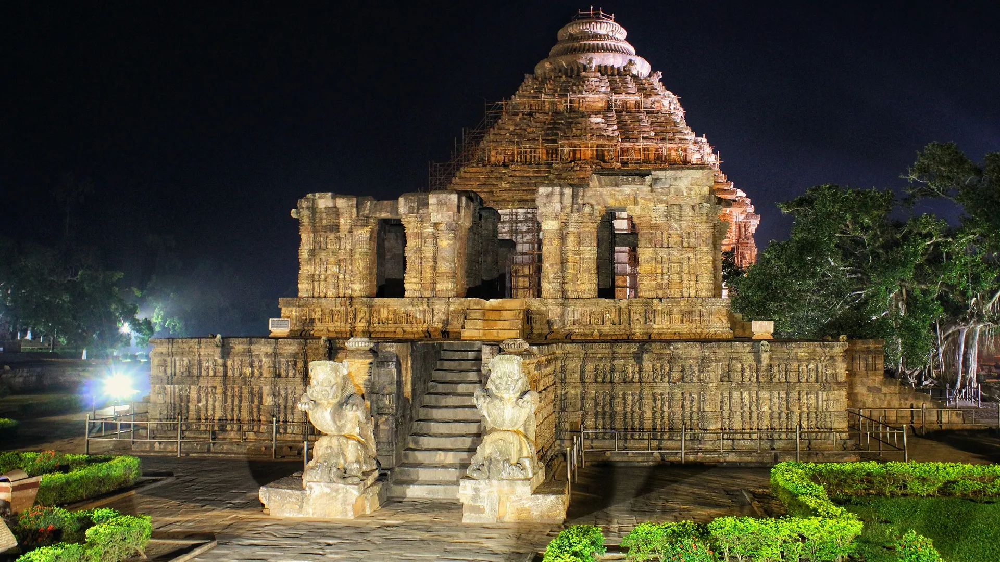
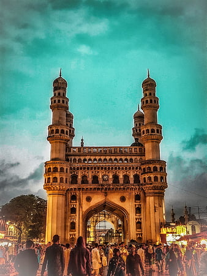
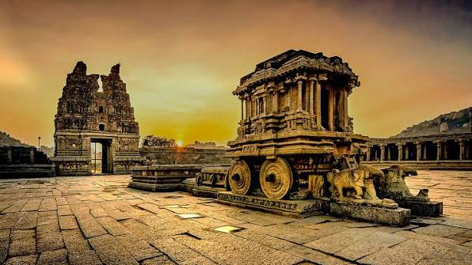
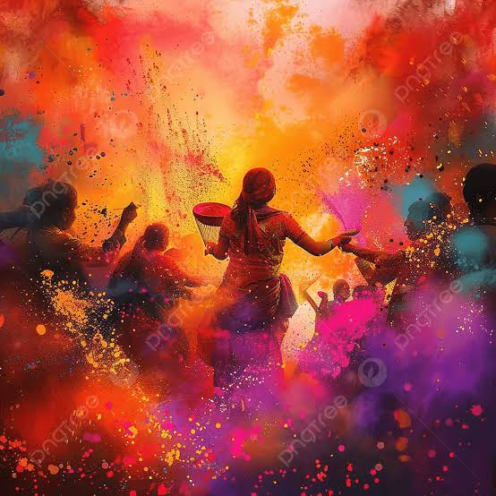
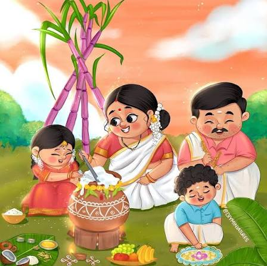
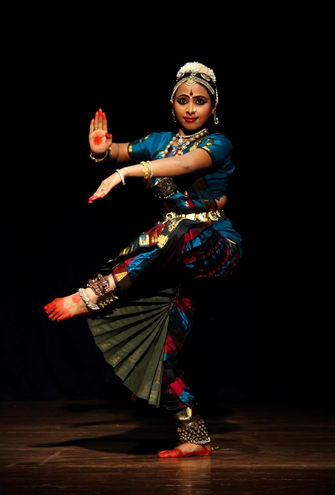

The Soul of India
Civilization's oldest living voice,
speaking across five thousand years.
From the Indus Valley's advanced urban planning to the Gupta Empire's golden age of mathematics, from the Chola dynasty's maritime empire to Chandragupta Maurya's unified realm — India's story is one of continuous civilisation. It gave the world the concept of zero, the game of chess, the philosophy of yoga, and the insight of ahimsa. Stretching from the Himalayas to the Indian Ocean, from ancient river valleys to the arc of space — India is not merely a nation. It is an idea, eternal and ever-becoming.
Hinduism
Originating in the Indian subcontinent, Hinduism is one of the world's oldest living religions, rooted in the Indus Valley civilization and Vedic traditions. It is a diverse family of philosophies bound by core concepts like Dharma (duty/righteousness), Karma (action and consequence), and Moksha (liberation from the cycle of rebirth).
Scripturally, it is guided by the Vedas, Upanishads, and epics like the Bhagavad Gita and Ramayana. Practices range from elaborate temple pujas to solitary yoga and meditation, profoundly influencing Indian philosophy, art, and societal structure for millennia.
Islam
Islam arrived in India primarily through Arab traders in the 7th century and later via Central Asian conquerors, becoming deeply woven into the subcontinent's fabric. The faith is strictly monotheistic, centered on the belief in one God (Allah) and guided by the Five Pillars, including daily prayers (Namaz), charity (Zakat), and fasting during Ramadan (Roza).
Its scripture is the Quran, revealed to the Prophet Muhammad. In India, Islam's influence is remarkably visible in the syncretic Indo-Islamic architecture, classical music, and the mystical Sufi tradition, which emphasized universal love and divine devotion.
Christianity
Christianity in India is incredibly ancient, traditionally believed to have been introduced by St. Thomas the Apostle on the Malabar Coast in 52 CE. It centers on the life, teachings, and resurrection of Jesus Christ, recognizing Him as the savior, with beliefs rooted in the Holy Trinity.
The primary scripture is the Holy Bible. Through various denominations—from ancient Syrian churches in Kerala to later Catholic and Protestant missions—Christianity has heavily influenced Indian society, particularly through the establishment of widespread educational institutions and healthcare networks.
Buddhism
Born in ancient India in the 6th century BCE, Buddhism was founded by Siddhartha Gautama (the Buddha) after he attained enlightenment under the Bodhi tree. Its core teachings are the Four Noble Truths—addressing the nature of suffering—and the Eightfold Path, which offers a practical guide to ethical living, mental discipline, and wisdom.
Guided by the Tripitaka scriptures, Buddhist practice emphasizes meditation, mindfulness, and Ahimsa (non-violence). Though its numbers declined in India over centuries, it spread across Asia, and its principles heavily influenced Indian philosophical thought and modern social reform.
Sikhism
Founded in the 15th century in the Punjab region by Guru Nanak, Sikhism is a monotheistic faith emphasizing the equality of all humanity, rejecting caste and gender discrimination. It is guided by the lineage of ten Gurus, culminating in the eternal living Guru, the holy scripture known as the Guru Granth Sahib.
Core practices include Naam Japna (meditation on God's name), Kirat Karni (honest labor), and Vand Chhakna (sharing with others), best exemplified by the Langar (free community kitchen). The faith is known for its strong martial tradition, community service (Seva), and agricultural roots.
Judaism
Judaism has a small but historically significant presence in India, with communities like the Cochin Jews arriving via ancient trade routes as early as the time of King Solomon, and later groups fleeing persecution. It is an Abrahamic faith centered on a covenant with one God and a commitment to justice and law.
The sacred text is the Torah. Indian Jewish communities maintained strict adherence to practices like observing Shabbat and Kosher dietary laws while seamlessly assimilating into the local culture, creating a unique micro-culture particularly visible in historical trade hubs.
Zoroastrianism / Parsis
Originating in ancient Iran under the prophet Zoroaster, the faith arrived in India between the 8th and 10th centuries when adherents (Parsis) fled religious persecution. It centers on the creator Ahura Mazda and the cosmic struggle between truth and falsehood, encapsulated in the maxim: "Good Thoughts, Good Words, Good Deeds."
Guided by the Avesta scriptures, the faith centers around fire temples (where fire represents divine purity) and the Navjote initiation ceremony. Despite being a tiny minority, Parsis have had a disproportionately massive influence on India's industrialization, arts, and philanthropy (e.g., the Tata family).
Jainism
Jainism is an ancient Indian religion formalized by a lineage of 24 Tirthankaras, the last being Lord Mahavira in the 6th century BCE. Its philosophical core rests on three pillars: Ahimsa (supreme non-violence), Anekantavada (many-sidedness/pluralism of truth), and Aparigraha (non-attachment).
Jain practices are famously rigorous, involving strict vegetarianism, asceticism, and carefulness to avoid harming even microscopic life forms, guided by the Agama scriptures. The community has deeply influenced Indian business, architecture (notably intricate marble temples), and the overarching Indian philosophy of non-violence.
Unity in Diversity
1.4 billion souls. 22 official languages.
8 major religions. One unbroken civilisation.
Anekta mein Ekta — unity is India's original invention.
Brahmi Script
~3rd Century BCEThe mother script of most modern Indian languages — Ashoka's edicts carved in stone across the subcontinent.
Brahmagupta
A brilliant 7th-century Indian mathematician and astronomer who established the foundational rules for computing with zero as a number, and outlined the rules for working with positive and negative numbers.
Zero & Infinity
Aryabhata, 499 CEAryabhata and Brahmagupta formalised zero as both a number and a concept — the foundation of all modern mathematics.
Zero
The concept of zero as both a placeholder and a fully independent mathematical value was invented in ancient India, a conceptual leap that paved the way for algebra, calculus, and modern computing.
Ayurveda
~600 BCESushruta's compendium describes 300+ surgical procedures including rhinoplasty — the world's first plastic surgery.
Ayurveda
A 3,000-year-old holistic medical system from India that focuses on balancing the body's life energies (doshas) through specific diets, herbal treatments, massage, and yogic breathing.
Chaturanga
Origin of Chess, 6th C CEThe precursor to chess — four divisions of army (infantry, cavalry, elephant, chariot) moving across an 8×8 board.
Chess
The world's most famous strategy game originated in 6th-century India as Chaturanga, which simulated the four divisions of the Indian military: infantry (pawns), cavalry (knights), elephants (bishops), and chariots (rooks).
Yoga
Patanjali, ~400 BCEPatanjali's Yoga Sutras codified an 8-limbed path of physical and mental discipline — now practised worldwide.
Yoga
An ancient discipline integrating physical postures (asanas), breathing techniques (pranayama), and meditation to unite the mind, body, and spirit. It has evolved from ascetic roots to a global wellness phenomenon.
Indus Valley
Vedic Age
Buddha & Mahavira
Maurya Empire
Gupta Golden Age
Mughal Empire
English to Brahmi Translator
By using conventional AI made by JS
Ancient Civilisation
The cradle of mathematics, astronomy, medicine, philosophy, and governance — five thousand years of unbroken intellectual civilisation. India gave the world the zero, the decimal system, plastic surgery, and the concept of infinity.
Heritage Monuments
Stones that outlived empires. Architecture as scripture. Every monument a civilisation's signature in permanence.

Taj Mahal
Agra · 1632 CEA monument of love carved in white marble — changing hues with the sun.
Taj Mahal
A 17th-century masterpiece of Mughal architecture in Agra, built entirely of white marble by Emperor Shah Jahan in memory of his wife Mumtaz Mahal.

India Gate
New Delhi · 1931 CE42 metres of sandstone honouring 84,000 soldiers — the Amar Jawan Jyoti burns beneath its arch.
India Gate
A towering sandstone archway in the heart of New Delhi, built as a memorial to 70,000 soldiers of the British Indian Army who died in World War I, housing the Amar Jawan Jyoti (eternal flame).

Konark Sun Temple
Odisha · 1250 CEA 100-foot chariot of the Sun God with 12 pairs of stone wheels, pulled by 7 horses across the ages.
Konark Sun Temple
A 13th-century architectural marvel in Odisha designed in the shape of a colossal chariot for the Sun God, featuring 24 intricately carved stone wheels.

Qutub Minar
Delhi · 1193 CEThe world's tallest brick minaret at 73 metres, etched with Quranic verses.
Qutub Minar
Located in Delhi, this 73-meter tall structure is the highest brick minaret in the world, representing early Indo-Islamic architecture with its intricate sandstone carvings.

Charminar
Hyderabad · 1591 CEFour towering minarets guard this granite mosque at the heart of Hyderabad's old city.
Charminar
The iconic 16th-century monument and mosque in Hyderabad, distinguished by its four grand arches and towering minarets, built by Muhammad Quli Qutb Shah.

Hampi
Karnataka · 14th C CEThe Vijayanagara Empire's lost capital — a UNESCO wonderland of boulder-strewn temples, elephant stables, and a stone chariot.
Hampi
The spectacular stone ruins in Karnataka that were once the capital of the wealthy Vijayanagara Empire, famous for its musical pillars and the iconic stone chariot.
The Living Calendar
India does not celebrate festivals. India breathes them — light, colour, devotion, and harvest woven into time.
Diwali
Festival of Lights
Rows of clay lamps light up every home — the triumph of light over darkness.Diwali
The Festival of Lights, India's biggest holiday, celebrating the victory of light over darkness and good over evil, marked by the lighting of earthen lamps (diyas), fireworks, and sharing sweets.

Holi
Festival of Colours
Powdered colours fill the air — celebrating the triumph of devotion and radiant spring.Holi
The vibrant Festival of Colors celebrating the arrival of spring and eternal love, where communities take to the streets to playfully drench each other in colored water and powders.
Eid al-Fitr
Festival of Breaking Fast
The crescent moon ushers in prayers, feasts, and charity — celebrated by over 200 million Indian Muslims.Eid
Major Islamic celebrations marked by special congregational prayers, the wearing of new clothes, charitable giving, and grand feasts featuring dishes like sheer khurma and biryani.

Pongal
Harvest Festival
Rice boiled in milk till it overflows — offered first to the Sun God Surya.Pongal
A four-day harvest festival in Tamil Nadu dedicated to the Sun God. The highlight is the boiling of newly harvested rice in milk until it overflows from a clay pot, symbolizing prosperity.
Christmas
Festival of Giving
From midnight Mass in Kerala's ancient Syrian churches to Goa's midnight street processions.Christmas
Commemorating the birth of Jesus Christ, Christmas in India uniquely blends Christian traditions with local cultural flavors, including midnight Mass, festive decorations, and the exchange of gifts and sweets.
A Feast for the Senses
Six thousand years of culinary philosophy — spice, balance, and devotion on a single plate.
Biryani
Hyderabad · LucknowLayers of fragrant basmati and slow-cooked meat sealed with dough — a Mughal legacy of precision and patience.
Biryani
A globally renowned, highly aromatic rice dish layered with marinated meats or vegetables, saffron, and whole spices. Each region has its own fiercely defended style, notably the Hyderabadi and Lucknowi variants.
Masala Dosa
Tamil Nadu · KarnatakaA crisp rice-lentil crepe cradling spiced potatoes — South India's staple elevated to world cuisine.
Dosa
Originating in South India, this is a thin, crispy, savory crepe made from a fermented batter of rice and lentils, traditionally served hot with spiced potato filling, coconut chutney, and tangy sambar.
Butter Chicken
Punjab · New DelhiTender tandoori chicken simmered in a rich, buttery tomato-cream gravy — born in Delhi's Moti Mahal.
Butter Chicken
Also known as Murgh Makhani, this dish originated in Delhi. It features tandoor-roasted chicken pieces simmered in a velvety, mildly spiced, rich tomato gravy finished with butter and cream.
Jalebi
North India · RajasthanDeep-fried pretzels soaked in saffron sugar syrup — the sticky-sweet finale of every celebration.
Jalebi
A beloved street sweet made by deep-frying a wheat flour batter in pretzel or circular shapes, which are then immediately soaked in a warm, saffron-laced sugar syrup.
Motichoor Laddu
Rajasthan · GujaratTiny pearls of gram flour simmered in ghee, bound with sugar and cardamom — the sweet of every Indian festive tray.
Laddu
Ubiquitous spherical sweets made from flour (like chickpea flour), fat (ghee), and sugar. They are the quintessential Indian celebratory sweet, constantly used as temple offerings and wedding gifts.
Wild India
From Himalayan snow leopards to Sundarbans tigers — nature's most magnificent creations call India home.
Bengal Tiger
Panthera tigris tigrisNational Animal
Bengal Tiger
India's national animal and an apex predator. India is home to over 70% of the world's wild tiger population, a success story largely attributed to the decades-long "Project Tiger" conservation effort.

Indian Peacock
Pavo cristatusNational Bird
Indian Peafowl
The national bird of India. The male peacock is famous for its breathtaking, iridescent blue-green tail plumage, which it fans out in a spectacular display during courtship rituals in the monsoon.

Indian Elephant
Elephas maximus indicusNational Heritage Animal
Indian Elephant
A highly intelligent megaherbivore that has been deeply revered in Indian culture and religion for centuries. Today, they are the focus of intense conservation efforts to protect their shrinking forest corridors.
Snow Leopard
Panthera unciaHimalayas
Snow Leopard
Known as the "Ghost of the Mountains," this elusive, solitary big cat thrives in the freezing, high-altitude ecosystems of the Himalayas, adapted with thick fur and a long tail for balance.
Classical Arts
Eight thousand years of dance, music, and poetry — devotion expressed through the human body itself. Nine recognised classical dance forms, hundreds of ragas, and a musical tradition that shaped the world.

Bharatanatyam
Tamil Nadu · 2000 BCEBharatanatyam
Originating in the Hindu temples of Tamil Nadu, Bharatanatyam is one of the oldest classical dance traditions in India, historically performed by Devadasis (temple dancers). The name itself is an acronym of its core elements: Bha (Bhavam/Expression), Ra (Ragam/Music), Ta (Talam/Rhythm), and Natyam (Dance).
A traditional repertoire progresses sequentially, starting with the invocatory Alarippu, moving through complex narrative pieces, and ending with a fast-paced, rhythmic Tillana. Dancers wear vibrant, pleated silk sarees that fan out during bent-knee postures (Aramandi) and are adorned with heavy temple jewelry and ankle bells (Ghungroo).
Sitar
A plucked string instrument synonymous with Hindustani classical music, globally popularized by Pandit Ravi Shankar. Crafted from teak wood with a resonant gourd base, it features sympathetic strings that provide a lingering hum, played with a wire plectrum (mizrab) to create signature string-bending notes (meend).
Tabla
The principal percussion instrument of North India, consisting of two hand drums: the wooden dayan (right) and the metal or clay bayan (left). The distinctive black tuning paste (syahi) on the drumheads allows for complex harmonic tones, played using mnemonic syllables (bols), mastered by legends like Ustad Zakir Hussain.
Veena
The Saraswati veena is an ancient, revered plucked instrument of South Indian Carnatic music with a history spanning 2,000 years. Carved from a single block of wood with a large gourd resonator, its fretted neck allows for exquisite gamakas (continuous oscillations and ornamentations of notes).
Kathak
Originating in North India, Kathak evolved from the ancient Kathakars (storytellers). It is famous for its complex footwork (tatkar), rapid spins (chakkar), and the unique blending of Hindu temple themes with Islamic Mughal court aesthetics.
Odissi
Hailing from the eastern state of Odisha, this dance is characterized by the Tribhangi (a three-part break posture of the head, chest, and pelvis). It features highly fluid, lyrical movements that often recreate the sculptures found on ancient temple walls.
Kathakali
A dramatic, highly stylized classical dance from Kerala. It is instantly recognizable by its massive, colorful costumes, intricately painted face makeup, and the use of the Navarasas (nine facial expressions) to silently act out grand epics like the Mahabharata.
Kuchipudi
From Andhra Pradesh, Kuchipudi is known for its quick, scintillating footwork and dramatic storytelling. A unique hallmark is the Tarangam, a sequence where the dancer balances a pot of water on their head while dancing on the sharp brass edges of a plate.
Manipuri
Originating in the northeastern state of Manipur, this style is gentle, graceful, and deeply spiritual, often depicting the Ras Lila (the divine love of Radha and Krishna). Female dancers wear the Potloi, a distinctive, stiff, barrel-shaped skirt.
Mohiniyattam
Known as the "Dance of the Enchantress," this Kerala style features swaying, graceful, and undulating movements. It is strictly performed by women dressed in elegant white or off-white Kasavu sarees with gold brocade borders.
Mars Orbiter Mission
Mangalyaan made global history by succeeding on its maiden attempt — a first for any nation. Built at a record low cost, the probe mapped the Martian surface and detected argon-40 in the exosphere. Communication ceased in late 2022.
Launch Vehicles
ISRO's workhorse, the PSLV, set a world record by launching 104 satellites in a single flight. The newer LVM3 serves as India's heavy-lift rocket, designed to carry massive payloads and power the upcoming Gaganyaan human spaceflight mission.
Lunar Exploration
Chandrayaan-1 definitively discovered water molecules on the Moon. While Chandrayaan-2's orbiter continues high-resolution lunar mapping, Chandrayaan-3 made a historic soft landing near the crater-filled lunar south pole in 2023.
India in Space
From Thumba to the Moon's south pole — India's space programme stands among the world's finest, achieved at a fraction of the cost.
UPI Transactions
The Unified Payments Interface (UPI) has revolutionized peer-to-peer and merchant transactions, processing over 172 billion transactions valued at a staggering ₹260 Lakh Crore. Once a domestic marvel, it is now expanding globally into markets like Singapore, the UAE, and France.
Internet Users
India boasts over 950 million active internet users. This was catalyzed by the "Jio revolution," which gave India the cheapest mobile data rates globally, while the ambitious BharatNet project continues to connect remote rural Gram Panchayats to high-speed fiber broadband.
Aadhaar Enrolments
The world's largest biometric ID system with over 1.4 billion enrolments. It forms the backbone of India's digital welfare state, processing over 70 million authentications daily. By eliminating duplicates and ghosts, it has enabled Direct Benefit Transfer (DBT) savings of over ₹2.7 Lakh Crore.
Digital India
The world's largest digital democracy. India built a real-time payment stack (UPI) serving billions — processing more transactions than Visa and Mastercard combined, with minimal infrastructure.
Tomorrow's India
A civilisation five thousand years old, now racing towards the future — leading the world in green energy, artificial intelligence, and human aspiration. The third largest startup ecosystem on Earth.
Renewable Energy
India has set an aggressive target of achieving 500GW of non-fossil fuel capacity by 2030. To meet this, the country has constructed some of the largest solar parks on the planet, including the massive Bhadla Solar Park in Rajasthan and Pavagada in Karnataka.
Third Largest Startup Ecosystem
India is the world's third-largest startup ecosystem, boasting over 125,000 recognized startups and more than 110 "unicorns" (startups valued over $1 billion). This vibrant ecosystem has attracted over $150 billion in cumulative funding across fintech, edtech, and SaaS.
Electric Vehicles
To combat urban pollution and reduce import reliance, India targets an 80% EV penetration rate for two-wheelers by 2030. This transition is heavily subsidized and supported by government schemes like FAME II and the newly introduced PM E-DRIVE initiative to build charging infrastructure.
Jai Hind
Where civilisation was born (Sindhu-Saraswati, 3300 BCE), where diversity became strength (122 languages, one soul), where ancient wisdom met modern ambition (zero to Mars orbit) — this is India. Eternal, becoming, infinite.